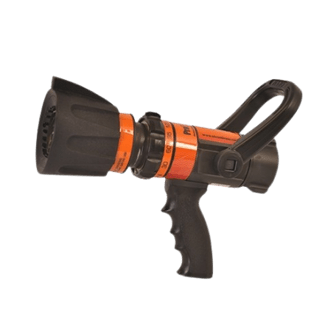

01 / MULTI-PURPOSE
AKRON SaberJet
A multi-purpose CAFS nozzle. Its Dual Shutoff (DSO) design allows operators to flow a solid-bore stream and a fog stream at the same time.
View manufacturer details Enquire about this nozzleEquipment guide / 02
Compare nozzle designs for different stream and flow-control requirements.
Explore the rangeNozzle range
A multi-purpose CAFS nozzle. Its Dual Shutoff (DSO) design allows operators to flow a solid-bore stream and a fog stream at the same time.
View manufacturer details Enquire about this nozzle
A constant-gallonage nozzle with multiple flow settings, allowing the operator to select the flow while changing stream pattern.
View manufacturer details Enquire about this nozzle
A handline nozzle with selectable flow and pressure options. The bumper adjustment changes the stream from straight to wide fog.
View manufacturer details Enquire about this nozzleLooking for another kind of equipment?
Browse all categories